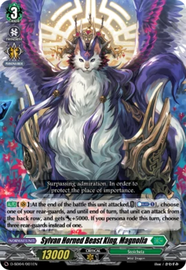

Who is Sylvan Horned Beast King, Magnolia?

"A sylvan horned beast that dwells in the Great Rettia Valley of the old Zoo region. The king that rules over the beasts in the region. A crown of horns made from trees grows on its head. It wields exceedingly strong powers as the incarnation of the forest. Watching over the flora and fauna of the Great Rettia Valley, it is loved and respected by not just the sylvan horned beasts, but all the living."
Deck Code: 9QKU
Magnolia is 1 of 2 of the Start Decks without a keyword as their specialty, but unlike Bastion, this units most powerful effect is locked behind "Persona Ride". Most of the support from this deck are cards that are either improved versions of cards in the start deck, (Brave Shooter, Ghost Chase, Abyss Temptation), or are cards that make it so that the deck does not feel as bad when the opponent pulls a trigger (Molemora and Marco). Make use of "Persona Ride" to lead a charge against the opposing side, unleashing waves of attacks.